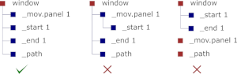
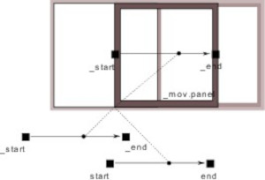
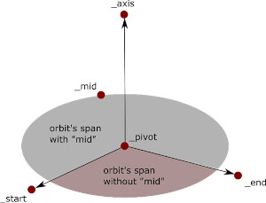
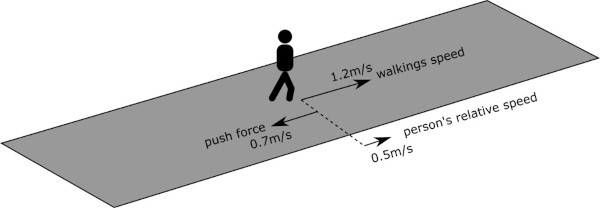

For defining custom elements and converting scene materials or lights into interactive ones, you need to use Unity components. For 3D elements, you can either define them in 3D models or by components.
For all of these types, you can set the progress, trigger and control options. For 3D elements, there is the possibility of defining complex elements. Materials and lights also have their own changer properties that should be defined.
Tames requires certain characteristics in a 3D model for it to be identified as a dynamic or interactive object. These characteristics can be included in either or both the 3D modelling software and Unity Editor, and created automatically (via Marker Dynamic) or manually.
In summary, to define the movements of a 3D object, we need the movement’s path and the base direction of moving on the path. In the 3D model, these requirements can be met by child objects whose names starts with tags _mov, _path, _start and _end. Instead of _mov you can use _head if you want your element follows a person.
This tell Tames that the object _mov moves along with _path in a direction defined by _start and _end. If such tag objects are included, Tames identifies their parent object as a dynamic element. The hierarchy of these objects is important for Tames to correctly identify them.
Warning: If you include a path object, the imported model that includes that object should have a readable mesh (see Importing 3D models)
Warning: Only the initial position of the tag objects, relative to the parent object, is recorded. Later changes to them will not affect the pathing of the latter.
Warning: Each element can only have one tag of each kind (one path, one moving object, etc.). Additional tags are ignored.
Note: Only the start of the object’s name should match with the tag names. So, you can have objects named _pathsdfsdf or _path.123 and they are still valid.
Warning: The path should be a stripe with only one segment on its width. Otherwise, Tames will not recognize it correctly.
Sliding objects are simplified pathed objects that can only slide on a straight line. Hence, they don’t need a _path tags but just _start and _end ones. The moving part slides parallel to the vector between start and end not on it. Regardless of where the start and end markers are, the moving panel behaves the same as long as their vectors have the same direction and magnitude.
Orbiting objects rotate around an axis. The axis is a vector between _pivot and _axis tags. A _start marker is necessary to indicate the starting angle of the orbiting. An optional _end marker determines the span of rotation (its absence means the rotation is 360 degrees). To distinguish between rotation angles under and above 180 degrees, a _mid tag is necessary for the latter to identify the larger angle between the start and end points.
Revolving objects rotate around themselves (in contrast to orbiting objects that rotate around an external axis). They are defined in conjunction with pathed or orbiting objects with the marker _up. This marker defines the revolving axis which limits their revolution when they are orbiting or moving on the path. In case of pathed objects, this axis is between _start and _up and for orbiting objects it is between _pivot and _up. If _up is on the same point as the other point of the axis, the object is deemed fixed and it will not rotate. If the _up tag is not present, the object will revolve freely (following either the orbit or path’s geometry).
If you include _pivot but not _axis, Tames assumes it is a free rotating object. You can include an _end as well which indicates the span of rotation. However, this span cannot be over 90° (it is default if you don’t add _end). Tracking free rotating objects can only follow people and cannot be controlled by other elements.
The list of all element-defining tags is in the following table:
Important: tags _start and either _mov or_head must always be present.
| Tags | Usage |
| _end | Sliding element |
| _pivot, _axis | Orbiting element (full circle) |
| _end, _pivot, _axis | Orbiting element (limited angle <180˚) |
| _pivot, _axis, _mid | Orbiting element (limited angle defined by _mid) |
| _pivot, _axis, _mid, _end | Orbiting element (limited angle, defiend by _mid and _end) |
| _pivot | Free rotating tracker (only with _head), with 90° span |
| _pivot, _end | Free rotating tracker (only with _head), with span defined by _end (max 90°) |
| _path, _end | Pathed element |
You can limit the movement of people with walkable surfaces. A walkable surface is part of a 3D object that limits the movement of camera on it. When they are imported, their upward-facing surfaces are detected and stored as the navigable area of the space. To define an object as walkable you need to add a Marker Walk component to it.
To walk smoothly in the space, the walkable surfaces must be attached on the plan and be close to each other on vertical sections (less than 30cm level difference) on the section, otherwise, the movement between them will be invalid and impossible. Of course, if the walkable objects move their attachment and proximity may change and alter the walkability on their edges.
You can assign a pushing force to a surface. A pushing force is a velocity vector that affects a person’s default moving vector. Pushing forces are useful to simulate walkways and escalators.
Defining pushing forces works similar to defining moving objects, with only differences in the marker names (we add an “f” in the beginning of the marker name’s text). Instead of _path, _start, _end, _pivot and _axis, we would have _fpath, _fstart, _wend, _fpivot and _faxis. We can have sliding, rotating and pathed pushing forces, however, the usage of the markers is different. You cannot define the markers with components in this version.
For sliding and pathed push, _fstart and _fend still indicate the direction of the push, but their distance represents the velocity (in m/s) or the force of the push. In rotating push forces, there is no start and end, but only _fpivot and _faxis that represent both the rotation axis and its angular velocity by their distance (each unit would be 360 degrees per second). The direction of rotation is determined by the direction of the axis (clockwise if you look towards the axis’ direction).
Changers in material and lights are based on a structure called Changers (in Unity Editor they are set via Marker Changer components). This structure modifies a property by a mode of change and a custom number of steps (minimum of two) which represent the progress value. For example, if a light is turned on, it can be done in two ways:
The mode of change defines when and how smoothly the transition between the steps happen. There are three modes:
| How Tames work? <<< | >>> Components |